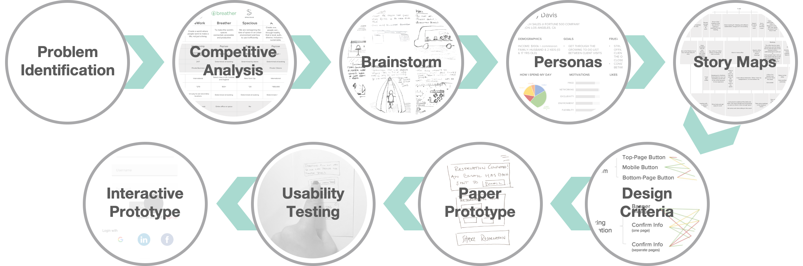
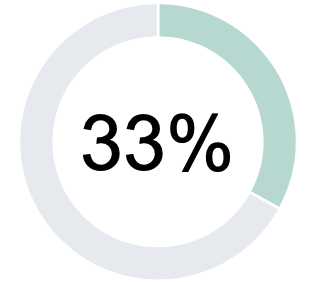
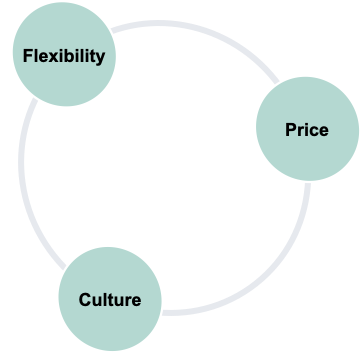
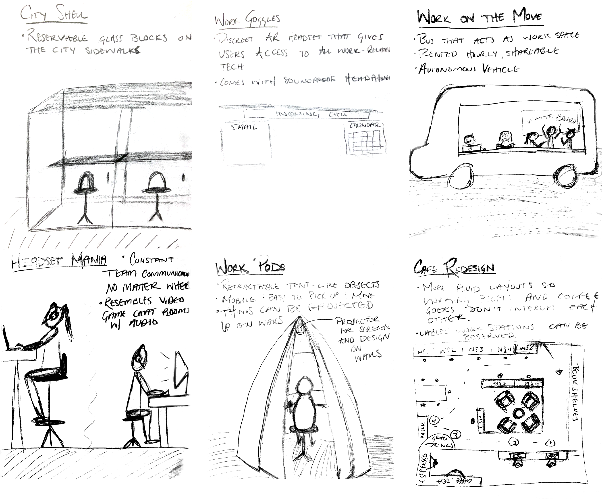
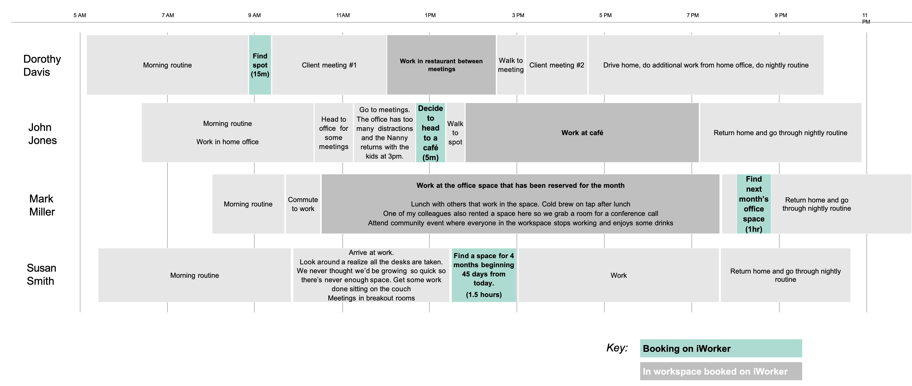

iWorker
As part of the University of Michigan's SI 582: Introduction to Interaction Design course, I created a prototype for an app called iWorker.
The objective of the course was to teach methods and skills involved in designing and prototyping interactive systems. Each student pursued their own project during the semester, using the design process to guide their process. Individually, students determined a problem space all the way through to creating a digital prototype.
Please note: this idea was conceived prior to the COVID-19 pandemic.
Project Overview
Identifying Problem Space
As an analyst at Nielsen I got my first experience with remote and distributed work. After discussing my experience with some of my friends who also had exposure working remote, I realized there was a gap for iWorkers, more specifically the disparity between their needs and what was available. While some don't mind working from their homes, those that traveled extensively didn't always have that option, while others felt they were less productive in their homes.
But it wasn't just my friends and I that were having this problem. From 2005 to 2018 there was a 140% increase in telecommuters, and does not include those self-employed (i.e., freelancers and gig workers).
On top of that, the US had about 4.3 million remote works in 2018, which was about 3.2% of the non-self employed, working population.
What made this an even more compelling problem space was that studies suggested that the trend towards remote work was set to continue. One study by Odesk, projected 1 in 3 employed people in the US would be remote works by 2020.
The Opportunity
How might we provide remote workers with more outside-the-home options that offer flexibility, price variation, and culture fit?
Competitive Analysis
The next step was to examine the competitive landscape. I included WeWork, Breather, Spacious, and Airbnb, and looked at their membership model, locations, space availablity, perks, and community.
Brainstorming
The Solution
Connect private businesses like restaurants, cafes, hotels, and landlords, during off hours to workers.
Personas
Given the time constraints, I was unable to conduct research to inform these personas, but I used secondary research to fill that gap.
Story Maps
Providing additional context to these personas, the story maps lended insight into exactly when a user might be on the platform. There were a number of different use-cases - some users might need a space in five minutes while others might look for something five months out.
Paper Prototype
Usability Study
User Testing
Participants
- In-class peers
- UMSI (non-class peers)
- Colleagues (remote workers)
User Feedback
Missing Features
- Menu button or way to navigate the app at a higher level
- Next or Back button when moving between pages
- Share the reservation with colleagues and others
General Feedback
- Labeling and button size did not communicate directions clearly
- Some users did not feel comfortable putting credit card info in during the account set up
- Price sensitive users may prefer to manually enter their price info
- The infinite scroll can be really challenging to work through
- The homepage doesn’t provide enough or the correct information
- The Book button on the landing page for each listing isn’t clear
Design Changes
New Features
- Share reservation with colleagues, friends, and anyone else (via email)
- Menu button and Next/Back button for navigation
Revisions
- Price and Date/Time pages made to be clearer and easier to navigate, utilizing manual entry for precision
- Labels and buttons are clearer and provide more direction
- Homepage now includes more relevant information – upcoming reservations and the ability to initiate the booking process
- Credit card entry prompted later on in the process via a pop-up
Digital Prototype
After creating a low fidelity prototype, testing it with my classmates, identifying areas that needed additional work. I created an low fidelity interactive prototype using Sketch and Invision.
Check it out below or click here!